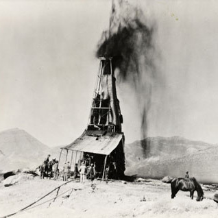
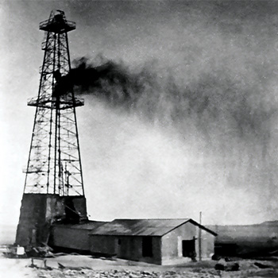
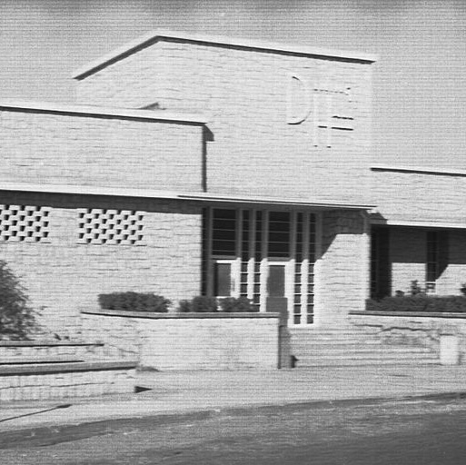

Turning through the pages of time, come and explore the history of oil, its discovery and how the land changed through the years. Every page takes you through a decade of growth. We all know the importance of oil in the country but do we know what it took and how it grew? This is equally important as well!
Timeline
-

1922
Initial search
In 1922, Ibn Saud met a New Zealand mining engineer named Major Frank Holmes. In 1923, the king signed a concession with Holmes allowing him to search for oil in eastern Saudi Arabia. In 1925, Holmes signed a concession with the sheikh of Bahrain, allowing him to search for oil there.
-

1932
Discovery of Oil
On 31 May 1932, the SOCAL subsidiary, the Bahrain Petroleum Company (BAPCO) struck oil in Bahrain.
-

1938
The first commercial oil well
In 1936 they identified a promising site and named it Dammam No. 7, after a nearby village. Over the next three years, the drillers were unsuccessful in making a commercial strike, but chief geologist Max Steineke persevered. He urged the team to drill deeper, even when Dammam No. 7 was plagued by cave-ins, stuck drill bits and other problems, before the drillers finally struck oil on 3 March 1938.
-

1943
Aramco
In 1943, the name of the company in control in Saudi Arabia was changed to Arabian American Oil Company (ARAMCO). In addition, numerous changes were made to the original concession after the striking of oil.
-

1988
Aramco becaomes Saudi Aramco
By 1988, ARAMCO was officially bought out by Saudi Arabia and became known as Saudi Aramco.
-
To be
continued!